History
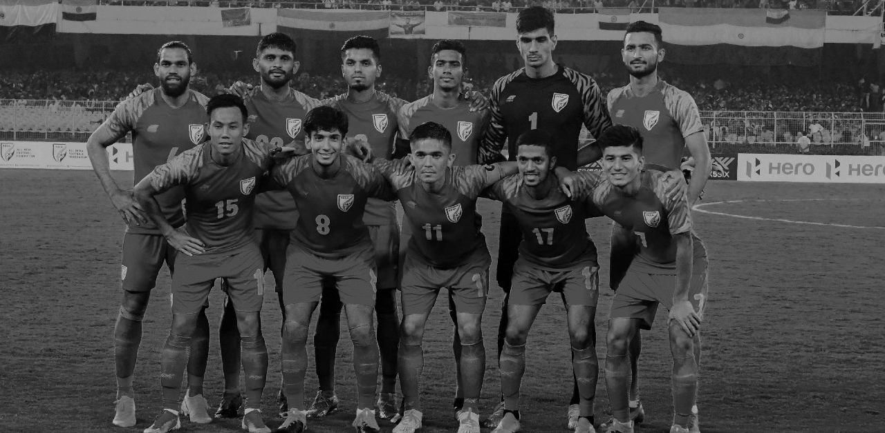
History of Indian Football Fans and Blue Pilgrims.
Until the 2000s, India football fans were mostly scattered, being widely based in West Bengal, North-East India, Goa, and Kerala Other than matches at the Asian Games, Nehru Cup, or SAFF Championship, fans showed up in small numbers when the team played, and fans of different clubs used to support the team in their respective local venues. In 2017, the Blue Pilgrims were established as the first organised fan club for the national team.
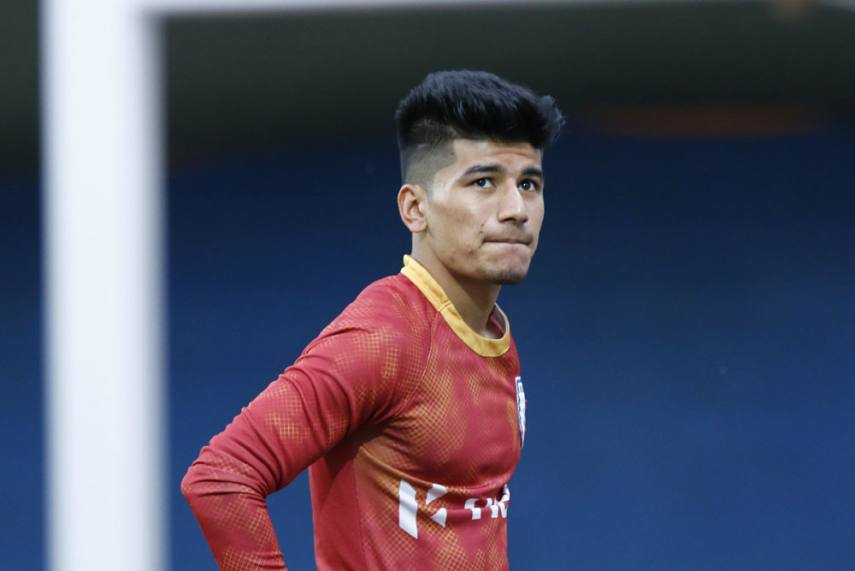
Blue Pilgrims
The Blue Pilgrims were formed with a motive to support the national team and the U-17 team during the historic 2017 U17 World Cup, India's first-ever FIFA competition participation. Begun with some 300 fans, the group grew to encompass thousands, with fans from different regions and with different allegiances coming together to support the Blue Tigers. They call themselves the devotees of the Blue Tigers, and their objective is to support India national football teams of all genders and ages, wherever they play. For their dedication, they have been called the "12th man" of the team.
Slogans and Banners
The Blue Pilgrims's most common chants are: "Oh India!", a) "In Unity we stand", b) "Oh India we stand for you!", c) and "Vande Mataram". Their sports anthems are "Oh when the blues go marching in, I wanna be in that number!" (sung to the tune of "When the Saints Go Marching In"), and "Hum honge kaamyab" (We Shall Overcome). Since their formation, the Blue Pilgrims celebrate after every match with the Viking clap together with national team members.
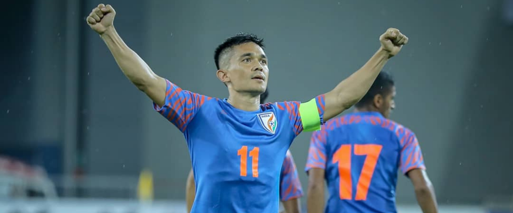
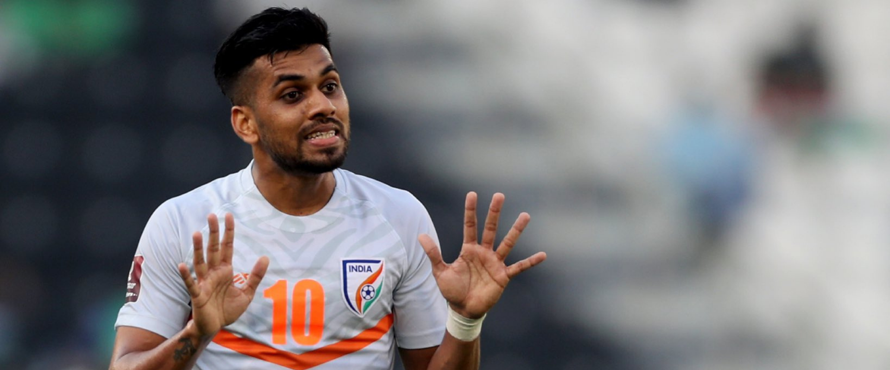
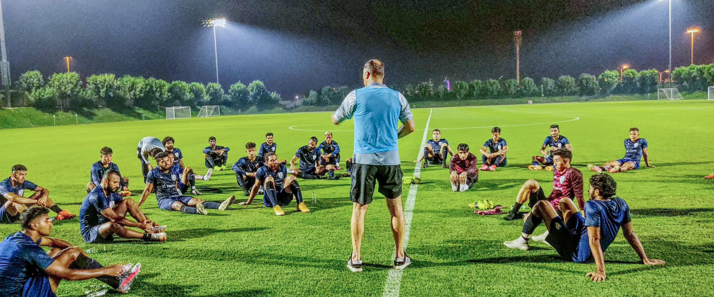
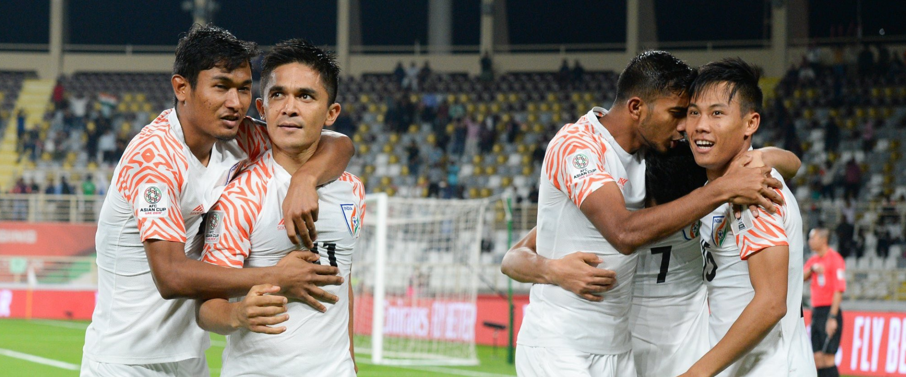
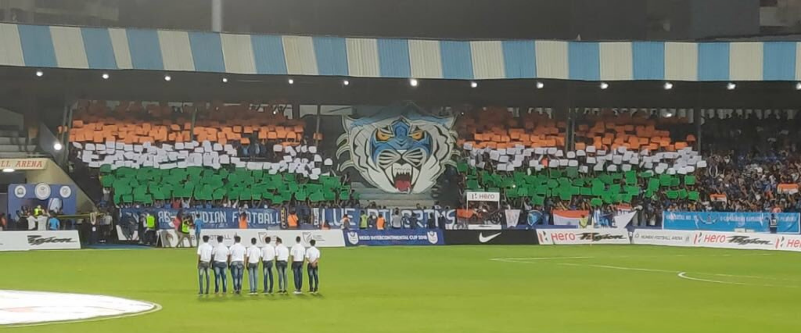
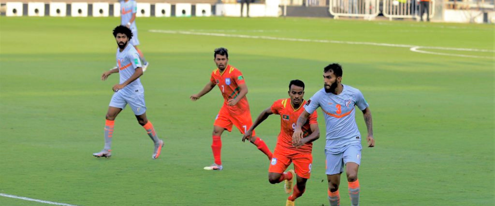
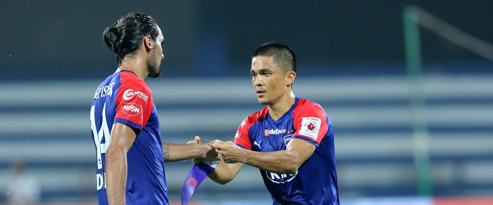
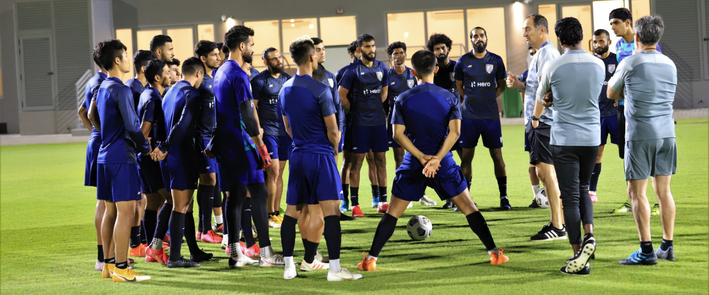
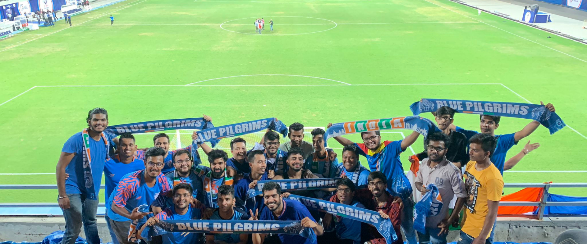